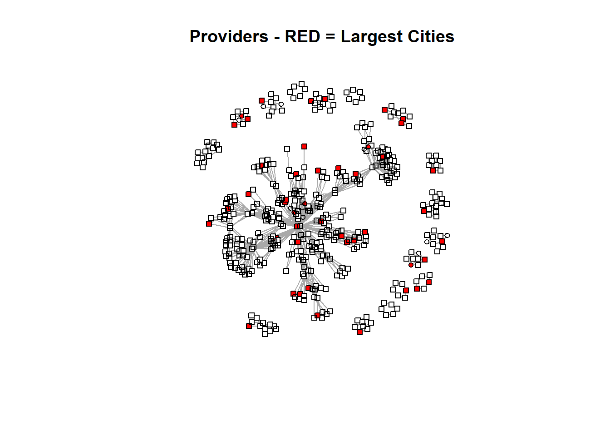

library(tidyverse)
library(readr)
library(igraph)
library(sna)
library(intergraph)
library(ggplot2)
library(sf)
library(tidyverse)
library(tmap)
library(tigris)
library(stplanr)This post will explore the Synthetic Mass network data in more detail.
Read in Data
pat_attr <- read_csv("post5drug_data/pat_attr.csv",
col_types = cols(...1 = col_skip()))
pro_attr <- read_csv("post5drug_data/pro_attr.csv",
col_types = cols(...1 = col_skip()))
encounters_cleaning <- read_csv("post5drug_data//encounters_cleaning.csv",
col_types = cols(...1 = col_skip()))
encounters_cleaned <- read_csv("post5drug_data//encounters_cleaned.csv",
col_types = cols(...1 = col_skip()))
encounter_attributes <- read_csv("post5drug_data/encounter_attributes.csv",
col_types = cols(...1 = col_skip()))
encounters_el <- read_csv("post5drug_data/encounters_el.csv",
col_types = cols(...1 = col_skip()))
encounters_st_3 <- read_csv("post5drug_data/encounters.st.3.csv",
col_types = cols(...1 = col_skip()))
attribute_list <- read.csv("post5drug_data/attribute_list.csv")
pat_blks6 <- readRDS("pat_blks6_results.rds")
prov_blks6 <- readRDS("prov_blks6_results.rds")Create bipartite network with attributes
encounters.stat <- network(encounters_el,
directed = FALSE,
bipartite = TRUE,
matrix.type = "edgelist",
vertex.attr = attribute_list)#create igraph
encounters.ig <- graph_from_biadjacency_matrix(encounters.stat)encounters.stat2 <- asNetwork(encounters.ig)projected_graph <- bipartite_projection(encounters.ig)colnames(encounters_cleaned) [1] "ENCOUNTER_ID" "START" "STOP"
[4] "PATIENT" "ORGANIZATION.x" "PROVIDER"
[7] "PAYER" "ENCOUNTERCLASS" "CODE"
[10] "DESCRIPTION" "BASE_ENCOUNTER_COST" "TOTAL_CLAIM_COST"
[13] "PAYER_COVERAGE" "REASONCODE" "REASONDESCRIPTION"
[16] "ORGANIZATION.y" "GENDER.x" "SPECIALITY"
[19] "ADDRESS.x" "CITY.x" "STATE.x"
[22] "ZIP.x" "LAT.x" "LON.x"
[25] "ENCOUNTERS" "PROCEDURES" "BIRTHDATE"
[28] "DEATHDATE" "SSN" "DRIVERS"
[31] "PASSPORT" "PREFIX" "SUFFIX"
[34] "MAIDEN" "MARITAL" "RACE"
[37] "ETHNICITY" "GENDER.y" "BIRTHPLACE"
[40] "ADDRESS.y" "CITY.y" "STATE.y"
[43] "COUNTY" "FIPS" "ZIP.y"
[46] "LAT.y" "LON.y" "HEALTHCARE_EXPENSES"
[49] "HEALTHCARE_COVERAGE" "INCOME" "AGE" PATIENT
patient_matrix <- as.matrix(as_adjacency_matrix(projected_graph$proj1))
patient.stat <- asNetwork(projected_graph$proj1)
patient.se <- equiv.clust(patient_matrix,
equiv.fun = "sedist",
method = "hamming",
mode = "graph",
cluster.method = "complete")pat_blk_model.patient.org <- blockmodel(patient_matrix,
patient.se, k = 4)plot.block<-function(x=pat_blk_mod, main=NULL, cex.lab=.00001,show_labels = FALSE){
plot.sociomatrix(x$blocked.data, labels=list(x$plabels,x$plabels),
main=main, drawlines = FALSE, cex.lab=cex.lab)
for (j in 2:length(x$plabels)) if (x$block.membership[j] !=
x$block.membership[j-1])
abline(v = j- 0.5, h = j- 0.5, lty = 3, xpd=FALSE)
}
plot.block(pat_blk_model.patient.org, main = "patient")pat_blks6 <- readRDS("pat_blks6_results.rds")# blockmodel with optimized partition
pat_blk_mod <- blockmodel(patient_matrix, pat_blks6$best$best1$clu,
plabels = rownames(patient_matrix))#assign block membership to vertex attribute
patient.stat%v%"role"<-pat_blk_mod$block.membership[match(patient.stat%v%"vertex.names",pat_blk_mod$plabels)]
#plot network using "role" to color nodes
GGally::ggnet2(patient.stat,
node.color="role",
node.size=sna::degree(patient.stat, gmode="graph"),
node.alpha = .5)Registered S3 method overwritten by 'GGally':
method from
+.gg ggplot2
PROVIDER
provider_matrix <- as.matrix(as_adjacency_matrix(projected_graph$proj2))
library(intergraph)
detach("package:igraph")
library(statnet)Warning: package 'statnet' was built under R version 4.3.2Loading required package: tergmWarning: package 'tergm' was built under R version 4.3.2Loading required package: ergmWarning: package 'ergm' was built under R version 4.3.2
'ergm' 4.6.0 (2023-12-17), part of the Statnet Project
* 'news(package="ergm")' for changes since last version
* 'citation("ergm")' for citation information
* 'https://statnet.org' for help, support, and other information'ergm' 4 is a major update that introduces some backwards-incompatible
changes. Please type 'news(package="ergm")' for a list of major
changes.
Attaching package: 'ergm'The following object is masked from 'package:statnet.common':
snctrlLoading required package: networkDynamicWarning: package 'networkDynamic' was built under R version 4.3.2
'networkDynamic' 0.11.4 (2023-12-10?), part of the Statnet Project
* 'news(package="networkDynamic")' for changes since last version
* 'citation("networkDynamic")' for citation information
* 'https://statnet.org' for help, support, and other informationRegistered S3 method overwritten by 'tergm':
method from
simulate_formula.network ergm
'tergm' 4.2.0 (2023-05-30), part of the Statnet Project
* 'news(package="tergm")' for changes since last version
* 'citation("tergm")' for citation information
* 'https://statnet.org' for help, support, and other information
Attaching package: 'tergm'The following object is masked from 'package:ergm':
snctrlThe following object is masked from 'package:statnet.common':
snctrlLoading required package: ergm.countWarning: package 'ergm.count' was built under R version 4.3.2
'ergm.count' 4.1.1 (2022-05-24), part of the Statnet Project
* 'news(package="ergm.count")' for changes since last version
* 'citation("ergm.count")' for citation information
* 'https://statnet.org' for help, support, and other informationLoading required package: tsnaWarning: package 'tsna' was built under R version 4.3.2
'statnet' 2019.6 (2019-06-13), part of the Statnet Project
* 'news(package="statnet")' for changes since last version
* 'citation("statnet")' for citation information
* 'https://statnet.org' for help, support, and other informationunable to reach CRANprovider.stat <- asNetwork(projected_graph$proj2)
provider.se <- equiv.clust(provider_matrix,
equiv.fun = "sedist",
method = "hamming",
mode = "graph",
cluster.method = "complete")blk_model.provider.org <- blockmodel(provider_matrix,
provider.se, k = 6)prov_blks6 <- readRDS("prov_blks6_results.rds")# blockmodel with optimized partition
prov_blk_mod <- blockmodel(provider_matrix, prov_blks6$best$best1$clu,
plabels = rownames(provider_matrix))#assign block membership to vertex attribute
provider.stat%v%"role"<-prov_blk_mod$block.membership[match(provider.stat%v%"vertex.names",prov_blk_mod$plabels)]
#plot network using "role" to color nodes
GGally::ggnet2(provider.stat,
node.color="role",
node.size=sna::degree(provider.stat, gmode="graph"),
node.alpha = .5) + ggtitle("Provider 6 Block Model Network")GGally::ggnet2(provider.stat,
node.color=pro_attr$block,
node.size=sna::degree(provider.stat, gmode="graph"),
node.alpha = .5) + ggtitle("Provider 6 Block Model Network")attributes <- dumpAttr(provider.stat)
# Extracting roles and vertex names
roles <- attributes$vertex$role
vertex_names <- attributes$vertex$vertex.names
# Creating a dataframe
role_vertex_df <- data.frame(vertex.names = vertex_names, role = roles)
# Displaying the first few rows of the dataframe
head(role_vertex_df %>%
arrange(desc(vertex.names))) vertex.names role
1 Zachery872 Rau926 1
2 Zachery872 Pagac496 3
3 Waylon572 Lakin515 3
4 Virgen207 Hyatt152 5
5 Vicente970 Armstrong51 5
6 Vern731 Casper496 3head(pro_attr %>%
arrange(desc(NAME)))# A tibble: 6 × 5
NAME GENDER CITY type block
<chr> <chr> <chr> <chr> <dbl>
1 Zachery872 Rau926 Male walpole PROVIDER 1
2 Zachery872 Pagac496 Male melrose PROVIDER 3
3 Waylon572 Lakin515 Male woburn PROVIDER 3
4 Virgen207 Hyatt152 Female stoneham PROVIDER 5
5 Vicente970 Armstrong51 Male stoneham PROVIDER 5
6 Vern731 Casper496 Male swampscott PROVIDER 3# Extracting vertex attributes
vertex_data <- data.frame(
role = get.vertex.attribute(provider.stat, "role"),
vertex.names = get.vertex.attribute(provider.stat, "vertex.names")
)
# Displaying the first few rows of the dataframe
head(vertex_data) role vertex.names
1 3 Elijah719 White193
2 3 Fidel864 Swift555
3 5 Virgen207 Hyatt152
4 3 Zachery872 Pagac496
5 3 Kristopher775 Schiller186
6 3 Laine739 Torphy630Create New Attribute Lists
pat_attr_list <- do.call(list, pat_attr)
pro_attr_list <- do.call(list, pro_attr)
both_attr <- bind_rows(pat_attr, pro_attr)
attribute_list <- do.call(list, both_attr)provider.st <- network(provider_matrix,
directed = FALSE,
matrix.type = "adjacency",
vertex.attr = pro_attr_list)
provider.st Network attributes:
vertices = 222
directed = FALSE
hyper = FALSE
loops = FALSE
multiple = FALSE
bipartite = FALSE
total edges= 497
missing edges= 0
non-missing edges= 497
Vertex attribute names:
block CITY GENDER NAME type vertex.names
No edge attributeslibrary(igraph)Warning: package 'igraph' was built under R version 4.3.2
Attaching package: 'igraph'The following object is masked from 'package:tigris':
blocksThe following objects are masked from 'package:sna':
betweenness, bonpow, closeness, components, degree, dyad.census,
evcent, hierarchy, is.connected, neighborhood, triad.censusThe following objects are masked from 'package:network':
%c%, %s%, add.edges, add.vertices, delete.edges, delete.vertices,
get.edge.attribute, get.edges, get.vertex.attribute, is.bipartite,
is.directed, list.edge.attributes, list.vertex.attributes,
set.edge.attribute, set.vertex.attributeThe following objects are masked from 'package:lubridate':
%--%, unionThe following objects are masked from 'package:dplyr':
as_data_frame, groups, unionThe following objects are masked from 'package:purrr':
compose, simplifyThe following object is masked from 'package:tidyr':
crossingThe following object is masked from 'package:tibble':
as_data_frameThe following objects are masked from 'package:stats':
decompose, spectrumThe following object is masked from 'package:base':
unionprovider_graph <- graph_from_biadjacency_matrix(provider.st)#assign colors
#colors <- c("yellow", "blue", "green", "orange", "red", "purple")
#vertex_colors <- colors[pro_attr_list$block]
vertex_colors <- ifelse(pro_attr_list$CITY == "boston", "red", "white")
vertex_shape <- ifelse(pro_attr_list$CITY == "boston", "circle", "square")plot(provider_graph,
layout = layout.fruchterman.reingold,
vertex.label.dist = 2,
vertex.size = 4,
vertex.color = vertex_colors,
vertex.shape = vertex_shape,
edge.label = NA,
vertex.label = NA,
vertex.label.cex = 0.2,
main = "SN Graph")
What other cities are on the provider list. Boston is not being properly represented, I have a feeling
Boston_Neighborhoods <- c(
"ALLSTON",
"BRIGHTON",
"BOSTON",
"CHARLESTOWN",
"DORCHESTER",
"HYDE PARK",
"JAMAICA PLAIN",
"MATTAPAN",
"ROSLINDALE",
"ROXBURY",
"West Roxbury",
"WEST ROXBURY"
)
Boston_Neighborhoods <- tolower(Boston_Neighborhoods)#assign colors
#colors <- c("yellow", "blue", "green", "orange", "red", "purple")
#vertex_colors <- colors[pro_attr_list$block]
vertex_colors <- ifelse(pro_attr$CITY %in% Boston_Neighborhoods, "red", "white")
vertex_shape <- ifelse(pro_attr$block == "2", "circle", "square")
#vertex_shape <- ifelse(pro_attr_list$CITY == "BOSTON", "circle", "square")plot(provider_graph,
layout = layout.fruchterman.reingold,
vertex.label.dist = 2,
vertex.size = 4,
vertex.color = vertex_colors,
vertex.shape = vertex_shape,
edge.label = NA,
vertex.label = NA,
vertex.label.cex = 0.2,
main = "Providers - RED = BOSTON")
#assign colors
colors <- c("yellow", "blue", "green", "orange", "red", "purple")
vertex_colors <- ifelse(pro_attr$block == 2 , "red", "white")
vertex_colors <- colors[pro_attr$block]
#vertex_shape <- ifelse(pro_attr$CITY %in% Boston_Neighborhoods, "circle", "square")plot(provider_graph,
layout = layout.fruchterman.reingold,
vertex.label.dist = 2,
vertex.size = 4,
vertex.color = vertex_colors,
#vertex.shape = vertex_shape,
edge.label = NA,
vertex.label = NA,
vertex.label.cex = 0.2,
main = "Providers - Blocks???")So… it’s not Boston related.
How about Highest populations
largest_pop <- c(
"Boston",
"Worcester",
"Springfield",
"Cambridge",
"Lowell",
"Brockton",
"Quincy",
"Lynn",
"New Bedford",
"Fall River",
"Lawrence",
"Newton",
"Somerville",
"Framingham",
"Haverhill")
largest_pop <- tolower(largest_pop)#assign colors
#colors <- c("yellow", "blue", "green", "orange", "red", "purple")
#vertex_colors <- colors[pro_attr_list$block]
vertex_colors <- ifelse(pro_attr_list$CITY %in% largest_pop, "red", "white")
vertex_shape <- ifelse(pro_attr_list$block == "6", "circle", "square")
#vertex_shape <- ifelse(pro_attr_list$CITY == "BOSTON", "circle", "square")plot(provider_graph,
layout = layout.fruchterman.reingold,
vertex.label.dist = 2,
vertex.size = 4,
vertex.color = vertex_colors,
vertex.shape = vertex_shape,
edge.label = NA,
vertex.label = NA,
vertex.label.cex = 0.2,
main = "Providers - RED = Largest Cities")
block1 <- pro_attr %>%
filter(block == 1)
block1# A tibble: 6 × 5
NAME GENDER CITY type block
<chr> <chr> <chr> <chr> <dbl>
1 Clemente531 Schamberger479 Male westwood PROVIDER 1
2 Zachery872 Rau926 Male walpole PROVIDER 1
3 Gino587 Block661 Male natick PROVIDER 1
4 Josefina523 O'Connell601 Female medfield PROVIDER 1
5 Jeanie708 Turner526 Female franklin PROVIDER 1
6 Freeda113 Crooks415 Female milford PROVIDER 1Block 1 is right outside of Boston
block2 <- pro_attr %>%
filter(block == 2)
block2# A tibble: 1 × 5
NAME GENDER CITY type block
<chr> <chr> <chr> <chr> <dbl>
1 Ted955 Reilly981 Male fitchburg PROVIDER 2Block 2, only one provider, Fitchburg.
block3 <- pro_attr %>%
filter(block == 3)
block3# A tibble: 155 × 5
NAME GENDER CITY type block
<chr> <chr> <chr> <chr> <dbl>
1 Shane235 Lueilwitz711 Male worcester PROVIDER 3
2 MarÃa José279 GodÃnez202 Female natick PROVIDER 3
3 Mickey576 Borer986 Female worcester PROVIDER 3
4 Cristopher265 Heaney114 Male taunton PROVIDER 3
5 Chery887 Kohler843 Female brighton PROVIDER 3
6 Margene509 Schamberger479 Female westford PROVIDER 3
7 Shasta644 King743 Female norwood PROVIDER 3
8 Sparkle906 Bernhard322 Female hadley PROVIDER 3
9 Eldon28 Cassin499 Male westfield PROVIDER 3
10 Buck819 Johnson679 Male south hamilton PROVIDER 3
# ℹ 145 more rowsBlock 3 is everywhere.
block4 <- pro_attr %>%
filter(block == 4)
block4# A tibble: 10 × 5
NAME GENDER CITY type block
<chr> <chr> <chr> <chr> <dbl>
1 Harland508 Rippin620 Male auburndale PROVIDER 4
2 Lizette501 Lebsack687 Female waban PROVIDER 4
3 Darnell564 Leannon79 Male waltham PROVIDER 4
4 Lynsey2 Lemke654 Female waltham PROVIDER 4
5 Neville893 Schoen8 Male waltham PROVIDER 4
6 Norah104 Jenkins714 Female waltham PROVIDER 4
7 Patrina117 Strosin214 Female waltham PROVIDER 4
8 Kati243 Ruecker817 Female waltham PROVIDER 4
9 Cortez851 Price929 Male waltham PROVIDER 4
10 Dante562 Reinger292 Male auburndale PROVIDER 4Block 4 is Heavy Waltham representation
block5 <- pro_attr %>%
filter(block == 5)
block5# A tibble: 43 × 5
NAME GENDER CITY type block
<chr> <chr> <chr> <chr> <dbl>
1 Jules135 Emard19 Male leominster PROVIDER 5
2 Jarvis643 Ankunding277 Male fall river PROVIDER 5
3 Bud153 Parisian75 Male worcester PROVIDER 5
4 Cherish740 Toy286 Female leominster PROVIDER 5
5 Jane262 Schmeler639 Female somerset PROVIDER 5
6 Joanna347 Abbott774 Female peabody PROVIDER 5
7 Mathew182 Howe413 Male stoneham PROVIDER 5
8 Emory494 Schuster709 Male stoneham PROVIDER 5
9 Marth98 Mayer370 Female greenfield PROVIDER 5
10 Rebeca548 GarcÃa15 Female brockton PROVIDER 5
# ℹ 33 more rowsBlock 5 is a bit of everyone
block6 <- pro_attr %>%
filter(block == 6)
block6# A tibble: 7 × 5
NAME GENDER CITY type block
<chr> <chr> <chr> <chr> <dbl>
1 Thad495 Leannon79 Male peabody PROVIDER 6
2 Karla801 Cummerata161 Female lynn PROVIDER 6
3 Alberto639 Adame662 Male saugus PROVIDER 6
4 Eddie505 Keeling57 Female lynn PROVIDER 6
5 Lady554 Kovacek682 Female lynn PROVIDER 6
6 Delbert384 Carter549 Male lynn PROVIDER 6
7 Louis204 Hauck852 Male lynn PROVIDER 6Block 6 is Northshore.
Ted955 <- encounters_cleaned %>%
filter(PROVIDER == "Ted955 Reilly981") %>%
group_by(PROVIDER, CITY.x, REASONDESCRIPTION)%>%
summarize(COUNT = n()) `summarise()` has grouped output by 'PROVIDER', 'CITY.x'. You can override
using the `.groups` argument.Ted955%>%
arrange(desc(COUNT))# A tibble: 16 × 4
# Groups: PROVIDER, CITY.x [1]
PROVIDER CITY.x REASONDESCRIPTION COUNT
<chr> <chr> <chr> <int>
1 Ted955 Reilly981 fitchburg <NA> 33
2 Ted955 Reilly981 fitchburg Dependent drug abuse (disorder) 24
3 Ted955 Reilly981 fitchburg Ischemic heart disease (disorder) 22
4 Ted955 Reilly981 fitchburg Chronic congestive heart failure (disorder) 9
5 Ted955 Reilly981 fitchburg Abnormal findings diagnostic imaging heart+… 8
6 Ted955 Reilly981 fitchburg History of coronary artery bypass grafting … 7
7 Ted955 Reilly981 fitchburg Hyperlipidemia 4
8 Ted955 Reilly981 fitchburg Aortic valve stenosis (disorder) 3
9 Ted955 Reilly981 fitchburg Myocardial infarction (disorder) 3
10 Ted955 Reilly981 fitchburg Acute non-ST segment elevation myocardial i… 2
11 Ted955 Reilly981 fitchburg History of aortic valve replacement (situat… 2
12 Ted955 Reilly981 fitchburg Pulmonary emphysema (disorder) 2
13 Ted955 Reilly981 fitchburg Acute ST segment elevation myocardial infar… 1
14 Ted955 Reilly981 fitchburg Sinusitis (disorder) 1
15 Ted955 Reilly981 fitchburg Stroke 1
16 Ted955 Reilly981 fitchburg Viral sinusitis (disorder) 1Gonna go ahead and say Ted’s a Cardiologist
Maybe there are other doctors that are in block one that are also cardiologists?
Barbara209 <- encounters_cleaned %>%
filter(PROVIDER == "Barbara209 Maldonado119") %>%
group_by(PROVIDER, CITY.x, REASONDESCRIPTION)%>%
summarize(COUNT = n()) `summarise()` has grouped output by 'PROVIDER', 'CITY.x'. You can override
using the `.groups` argument.Barbara209 %>%
arrange(desc(COUNT))# A tibble: 0 × 4
# Groups: PROVIDER, CITY.x [0]
# ℹ 4 variables: PROVIDER <chr>, CITY.x <chr>, REASONDESCRIPTION <chr>,
# COUNT <int>Gisele901 <- encounters_cleaned %>%
filter(PROVIDER == "Gisele901 Lehner980") %>%
group_by(PROVIDER, CITY.x, REASONDESCRIPTION)%>%
summarize(COUNT = n()) `summarise()` has grouped output by 'PROVIDER', 'CITY.x'. You can override
using the `.groups` argument.Gisele901 %>%
arrange(desc(COUNT))# A tibble: 0 × 4
# Groups: PROVIDER, CITY.x [0]
# ℹ 4 variables: PROVIDER <chr>, CITY.x <chr>, REASONDESCRIPTION <chr>,
# COUNT <int>encounters_reasons <- encounters_cleaned %>%
group_by(PROVIDER, CITY.x, REASONDESCRIPTION)%>%
summarize(COUNT = n()) `summarise()` has grouped output by 'PROVIDER', 'CITY.x'. You can override
using the `.groups` argument.encounters_reasons %>%
arrange(desc(COUNT))# A tibble: 765 × 4
# Groups: PROVIDER, CITY.x [222]
PROVIDER CITY.x REASONDESCRIPTION COUNT
<chr> <chr> <chr> <int>
1 Joanna347 Abbott774 peabody Chronic kidney disease stage 4 (disor… 518
2 Patrina117 Strosin214 waltham Chronic kidney disease stage 4 (disor… 216
3 Cortez851 Price929 waltham <NA> 139
4 Joanna347 Abbott774 peabody <NA> 131
5 Jewel43 Kassulke119 attleboro <NA> 115
6 Jules135 Emard19 leominster <NA> 113
7 Patrina117 Strosin214 waltham End-stage renal disease (disorder) 113
8 Randy380 Bergstrom287 hyannis Dependent drug abuse (disorder) 108
9 Saul605 Ratke343 middleton <NA> 88
10 Bud153 Parisian75 worcester <NA> 69
# ℹ 755 more rowsAlvin56 <- encounters_cleaned %>%
filter(PROVIDER == "Alvin56 Crona259") %>%
group_by(PROVIDER, PATIENT, CITY.x, REASONDESCRIPTION)%>%
summarize(COUNT = n()) `summarise()` has grouped output by 'PROVIDER', 'PATIENT', 'CITY.x'. You can
override using the `.groups` argument.Alvin56 %>%
arrange(desc(COUNT))# A tibble: 0 × 5
# Groups: PROVIDER, PATIENT, CITY.x [0]
# ℹ 5 variables: PROVIDER <chr>, PATIENT <chr>, CITY.x <chr>,
# REASONDESCRIPTION <chr>, COUNT <int>Margart214 <- encounters_cleaned %>%
filter(PROVIDER == "Margart214 Bogisich202") %>%
group_by(PROVIDER, PATIENT, CITY.x, REASONDESCRIPTION)%>%
summarize(COUNT = n()) `summarise()` has grouped output by 'PROVIDER', 'PATIENT', 'CITY.x'. You can
override using the `.groups` argument.Margart214 %>%
arrange(desc(COUNT))# A tibble: 0 × 5
# Groups: PROVIDER, PATIENT, CITY.x [0]
# ℹ 5 variables: PROVIDER <chr>, PATIENT <chr>, CITY.x <chr>,
# REASONDESCRIPTION <chr>, COUNT <int>